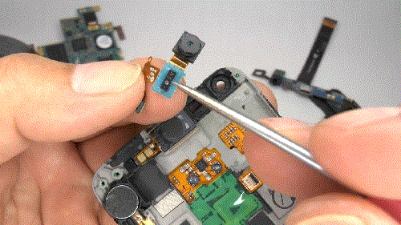
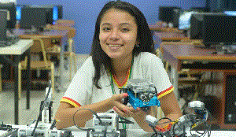
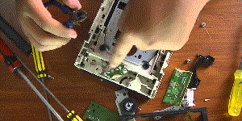
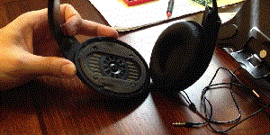

Este curso está destinado a interesados en el mundo de la Tecnología que quieren dar sus primeros pasos en el campo de la Electrónica
¿Por qué estudiar Electrónica?Muy sencillo: Dentro de todos los productos "Tecnológicos" de consumo masivo (celulares, notebooks, tablets, equipos de audio, etc.) encontrarás dispositivos electrónicos (resistencias, capacitores, bobinas, transistores, etc.). |
 |
¿Qué vas a hacer en el curso?
|

Elaborar tus propios proyectos. |
Reparar tus equipos electrónicos.  |

Reparar equipos de tus amigos. |
Requisitos
|
Documentación necesaria
|